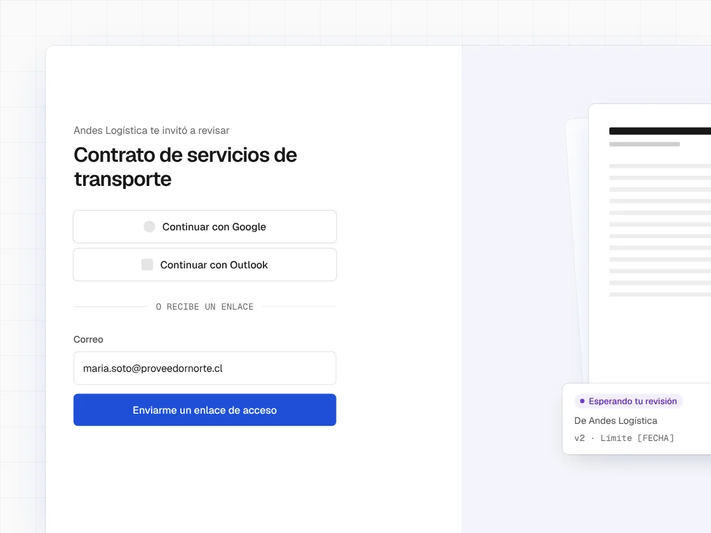
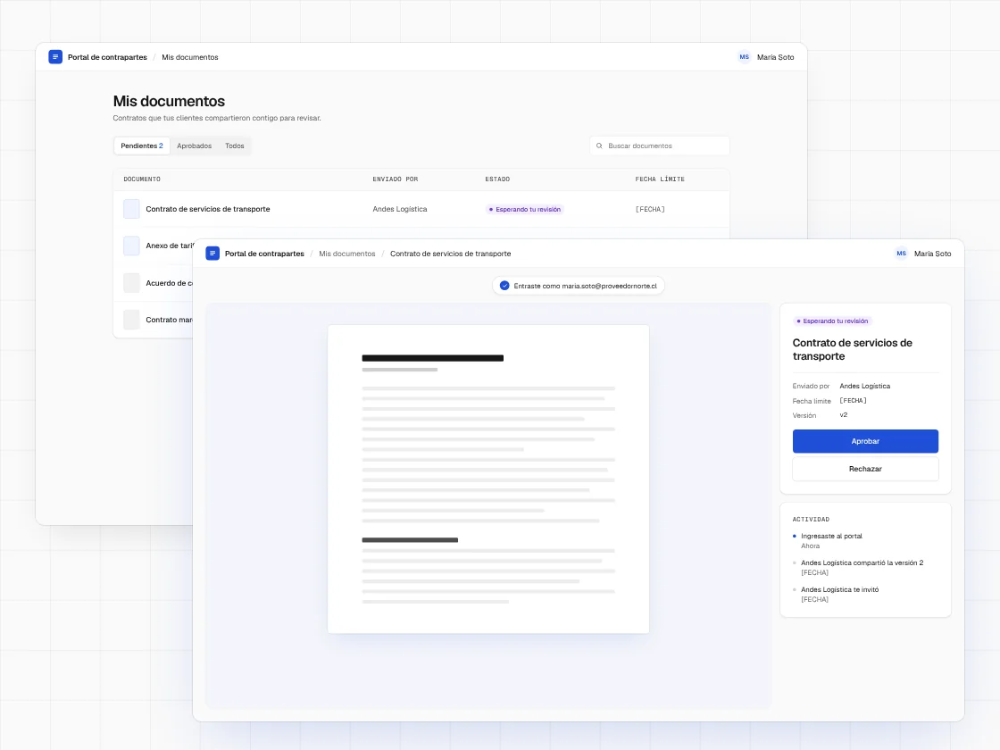

Portal de terceros
Un portal donde las contrapartes externas de nuestros clientes podían trabajar los contratos dentro de la plataforma en lugar de por correo electrónico. El squad diseñó el portal en conjunto. Tras el lanzamiento, la adopción fue baja. El diagnóstico señaló la contraseña como la principal barrera, así que propuse eliminarla y, dentro del squad, diseñé por mi cuenta el nuevo flujo de inicio de sesión.

El problema
Las empresas gestionaban sus contratos dentro de la plataforma, salvo una parte: negociar y firmar con su propia contraparte, un cliente o un proveedor. Eso seguía ocurriendo por correo electrónico, sin historial ni trazabilidad. Las entrevistas con usuarios confirmaron el patrón.
Dos usuarios
El portal tenía un usuario distinto al del producto principal. Un usuario ocasional no necesitaba las herramientas del CLM, pensadas para el uso diario.
| Usuario interno | Usuario externo | |
|---|---|---|
| Frecuencia | Diaria | Ocasional |
| Objetivo | Gestionar el ciclo de vida completo del contrato | Revisar un documento concreto |
| Necesidades | El CLM completo | Solo lo que ese documento requiere |
DecisiónEn el squad partimos de los flujos del CLM y los recortamos a lo que el usuario externo necesitaba. El registro y el inicio de sesión, sin embargo, copiaban los del CLM. En ese momento, cambiarlos no pareció necesario. Ese es el flujo de acceso que rediseñé después.

Proceso
- 1Entrevistas con usuarios
- 2Definición del alcance
- 3Wireframes y prototipo
- 4Pruebas de usabilidad
- 5Lanzamiento
- Baja adopción tras el lanzamiento
- 6Diagnóstico con Mixpanel y Hotjar
- 7Rediseño del inicio de sesión: SSO y magic link
Diagnóstico
Pocos usuarios externos iniciaban sesión en el portal, y menos aún volvían. El equipo presentó en una reunión los datos de Mixpanel, que mostraban dónde abandonaba la gente. Revisé Hotjar para entender por qué.
Dónde
El abandono se concentraba en el registro y el inicio de sesión.
Por qué
Los usuarios pedían restablecer la contraseña o abandonaban el proceso.
Para un usuario ocasional, la contraseña era la principal barrera de entrada.
Sin contraseña
Con esos datos, propuse eliminar la contraseña. Los usuarios inician sesión con un magic link, un enlace con token enviado a su correo, o con SSO, usando su cuenta de Google u Outlook.
Hay dos métodos porque el SSO no está disponible para todos los proveedores de correo. El magic link cubre esos casos.
Recorre el flujo sin contraseña: la invitación por correo, las tres formas de iniciar sesión, el aviso por usar un método distinto y la llegada al documento.
Este prototipo recrea el flujo rediseñado. No es la versión que probamos antes del lanzamiento. La vista del documento aparece como contexto y no forma parte de mi diseño.
Ver prototipo ↗Lo que aprendí
El diagnóstico me dejó una distinción que ahora aplico a todos los proyectos: un usuario ocasional tiene necesidades distintas a las de un usuario diario, más allá de usar el producto con menos frecuencia. La fricción que un usuario habitual supera una vez, un usuario ocasional la enfrenta en cada visita.
Con el mismo razonamiento, hoy llevaría la solución un paso más allá. En la versión final, cada usuario tenía que iniciar sesión siempre con el método con el que se registró por primera vez. Hoy lo identificaría por su correo sin importar el método, para que no tenga que recordar nada.
El prototipo que probamos antes del lanzamiento no pedía crear una cuenta, así que la fricción del registro nunca apareció en las pruebas. Hoy probaría con el registro real.
Interfaces recreadas con fines ilustrativos. El diseño original está bajo NDA.